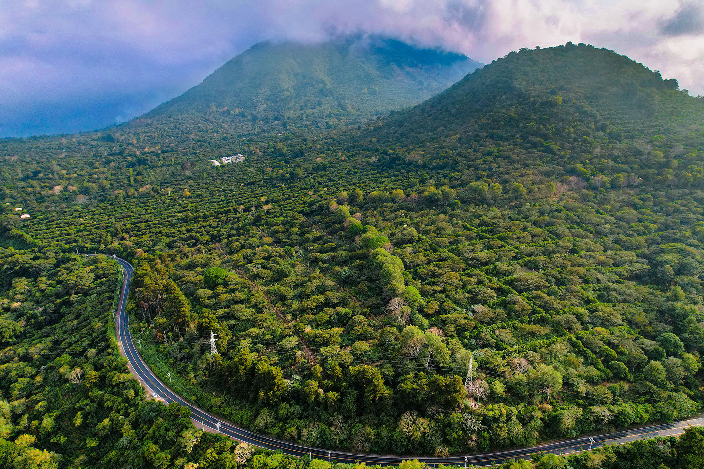
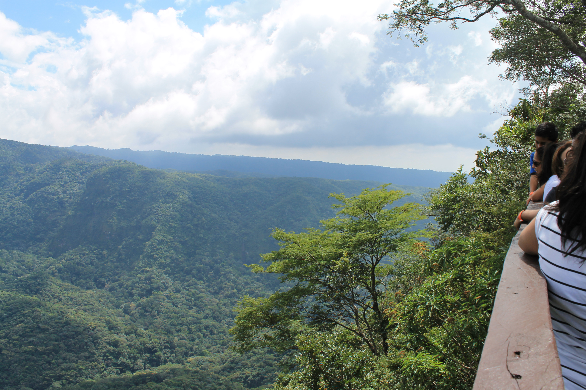
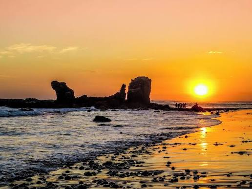
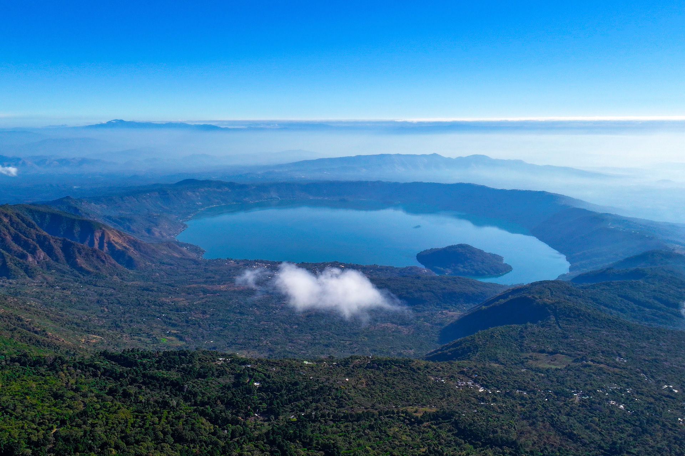
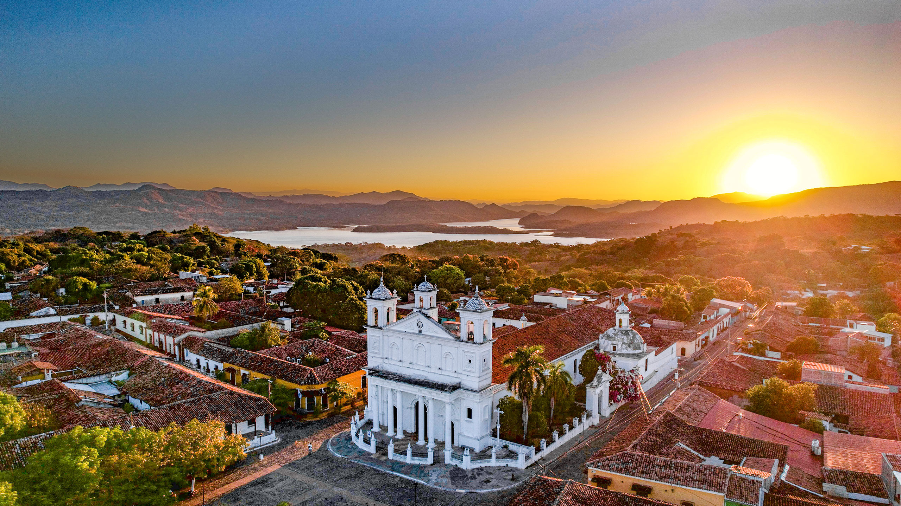
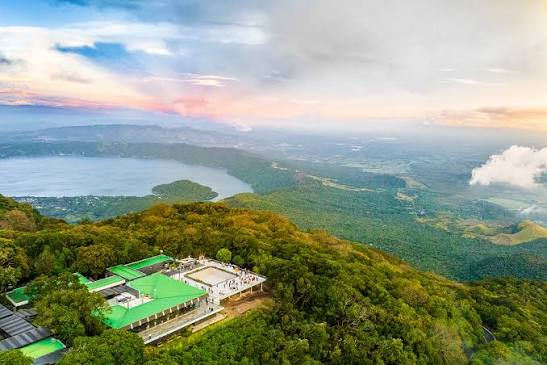
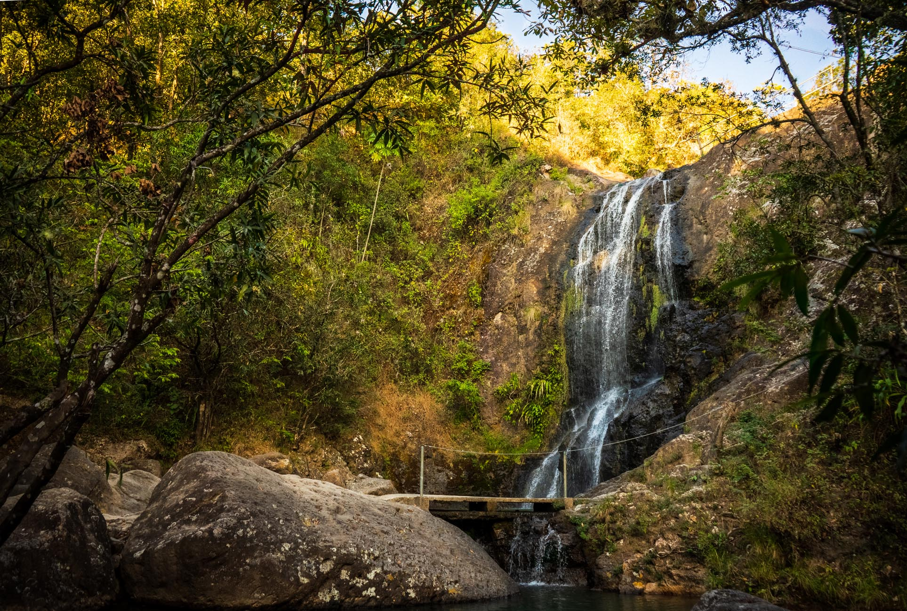

La Libertad
Joya de Cerén
Aldea maya conservada bajo cenizas volcánicas, Patrimonio Mundial de la UNESCO.
Ver másVolcanes, playas, historia y cultura
Turismo en El Salvador
Desde ciudades mayas enterradas por un volcán hasta playas para surfear, pueblos coloniales y bosques nubosos. Conoce ocho lugares que no te puedes perder.
Explorar destinos
La Libertad
Aldea maya conservada bajo cenizas volcánicas, Patrimonio Mundial de la UNESCO.
Ver más
Sonsonate y Ahuachapán
Pueblos coloridos de montaña con café, gastronomía y artesanías.
Ver más
Ahuachapán
Bosque de gran biodiversidad con senderos, ríos y observación de aves.
Ver más
La Libertad
Playa de arena oscura famosa por el surf, los atardeceres y la vida nocturna.
Ver más
Santa Ana
Lago formado en una caldera volcánica, ideal para paseos en lancha y miradores.
Ver más
Cuscatlán
Ciudad colonial de calles empedradas, arte, cultura y vista al lago Suchitlán.
Ver más
Santa Ana y Sonsonate
Parque de bosque nuboso con vistas del volcán de Izalco y del volcán de Santa Ana.
Ver más
Morazán
Pueblo de montaña vinculado a la historia reciente del país y a su museo de la revolución.
Ver más